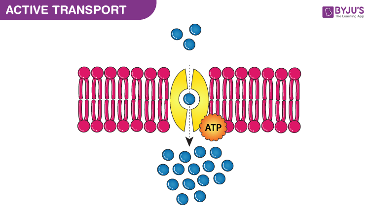
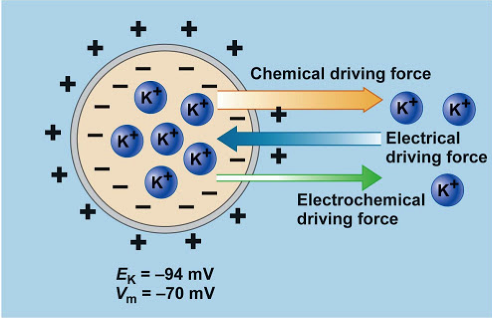

Active transport is the energy-requiring process of pumping molecules and ions across membranes "uphill" against a concentration gradient. In active transport, the particles move across a cell membrane from a lower concentration to a higher concentration.
Primary active transport, also called direct active transport, directly uses chemical energy (such as from adenosine triphosphate or ATP in case of cell membrane) to transport all species of solutes across a membrane against their concentration gradient. The electrochemical gradients set up by primary active transport store energy, which can be released as the ions move back down their gradients.
Secondary active transport uses the energy stored in those of primary active transport gradients to move other substances against their own gradients. In secondary active transport, the two molecules being transported may move either in the same direction (i.e., both into the cell), or in opposite directions. When they move in the same direction, the protein that transports them is called a symporter, while if they move in opposite directions, the protein is called an antiporter.
The active transport of ions across the cell membrane causes an electrical gradient to build up across this membrane. The number of positively charged ions outside the cell is usually greater than the number of positively charged ions in the cytosol.